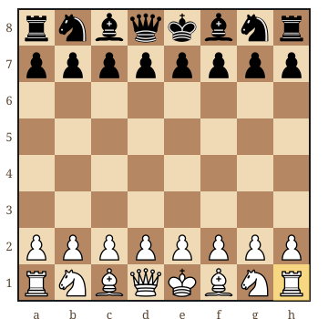
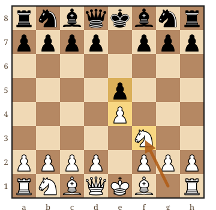

Pour apprendre à jouer aux échecs, commencez par comprendre le but du jeu, puis manipulez les pièces avant de lancer une partie. Le guide PDF gratuit de cette page vous accompagne depuis ces premiers repères jusqu'aux exercices et aux premières finales.
Si vous découvrez tout aujourd'hui, votre objectif n'est pas de retenir une ouverture célèbre. C'est de savoir à qui est le tour, quels coups sont autorisés et ce que vous cherchez à obtenir. Je suis Nicolas Musicki, professeur d'échecs depuis trois ans : voici le point de départ que je propose à un adulte qui n'a encore jamais joué.
Le but : attaquer le roi sans lui laisser de défense
Les échecs opposent deux joueurs sur un plateau de 64 cases. Chacun dispose au départ de seize pièces ; les Blancs commencent, puis chacun joue à son tour. Toutes les pièces sont visibles. Vous prenez vos décisions à partir de la position, sans lancer de dé.
Le but est de faire échec et mat : le roi adverse est attaqué et aucun coup autorisé ne permet de le sauver. On ne retire jamais ce roi du plateau. Prendre une dame peut aider à gagner, mais ce n'est pas la condition de victoire.
Autre repère utile : toutes les parties n'ont pas un vainqueur. Une partie peut être nulle. Si le joueur au trait n'a aucun coup légal et que son roi n'est pas attaqué, c'est un pat. Vous trouverez les situations détaillées dans les règles des échecs avec diagrammes.
Ce qu'il vous faut avant de toucher une pièce
Un échiquier lisible et ses pièces suffisent pour découvrir le jeu. Un plateau numérique convient aussi. Inutile d'acheter une pendule ou plusieurs manuels pour cette première étape. Choisissez surtout un support sur lequel vous distinguez facilement le roi, la dame et le fou.
Placez une case claire dans votre coin droit. Les deux camps se font face, les pions devant les autres pièces. La dame blanche commence sur une case claire, la dame noire sur une case foncée. Comparez votre installation au schéma, plutôt que de tenter de tout mémoriser d'un coup.

Vous pouvez commencer adulte, sans bagage particulier en mathématiques. Il faudra apprendre des déplacements, observer et accepter de vous tromper. Si l'âge vous fait hésiter, l'article apprendre les échecs à 30, 40 ou 50 ans répond à cette inquiétude plus précisément.
Dans quel ordre apprendre quand on part de zéro ?
Je conseille de séparer la découverte en petites tâches. Tout lire à la suite peut donner l'impression de comprendre ; déplacer les pièces permet de voir ce qui est réellement acquis.
- Reconnaître les pièces. Nommez-les sur le plateau, puis retrouvez-les dans l'autre couleur.
- Essayer leurs déplacements. Posez une seule pièce, montrez ses destinations, puis ajoutez un obstacle. Le cavalier peut sauter par-dessus les pièces ; les autres doivent respecter le chemin de leur déplacement.
- Comprendre les captures. Ajoutez une pièce adverse. Vérifiez notamment que le pion ne capture pas comme il avance.
- Protéger le roi. Apprenez à reconnaître un échec et cherchez une réponse autorisée. Un coup qui laisse votre roi attaqué est interdit.
- Compléter les règles et jouer. Découvrez le roque, la promotion et la prise en passant, puis gardez le mémo près du plateau.
Vous n'avez pas besoin de réciter les règles sans hésitation pour essayer une partie accompagnée. En revanche, faites vérifier un déplacement douteux. Pour chaque cas particulier, revenez au détail des règles spéciales, au lieu d'apprendre une version approximative.
Votre première partie : comprendre avant de mémoriser
Au départ, beaucoup de pièces sont bloquées par leurs propres pions. Avancer un pion central ouvre des passages. Sortir ensuite un cavalier permet de faire participer une autre pièce. C'est déjà une intention compréhensible, sans connaître le nom d'une ouverture.

Pour suivre cet exemple, « e4 » désigne la case d'arrivée d'un pion ; « Cf3 » signifie que le cavalier arrive en f3. Rejouez ces trois déplacements. Vous verrez que les fous disposent maintenant de diagonales ouvertes et que le cavalier blanc attaque le pion e5.
Une question avant chaque réponse
Quand l'adversaire vient de jouer, demandez-vous : « Qu'est-ce qui a changé ? » Regardez d'abord si votre roi ou une autre pièce est attaqué. Cette habitude est plus utile, au début, que chercher immédiatement un coup spectaculaire.
Pour une première partie sur écran, faites-vous accompagner par notre guide jouer aux échecs en ligne quand on débute. Le choix de la cadence et les réglages y sont expliqués séparément.
Combien de temps faut-il pour apprendre à jouer ?
Il faut distinguer comprendre une règle, la retrouver pendant une partie et l'utiliser pour prendre une bonne décision. Une première séance peut vous familiariser avec le matériel et plusieurs déplacements. Vous aurez probablement besoin de revenir sur certaines situations en jouant.
Il n'existe pas de délai universel pour jouer sans hésiter. Votre expérience des jeux, votre disponibilité et la façon dont on vous explique les positions comptent. Je préfère vous proposer un petit objectif vérifiable : aujourd'hui, reconnaître un échec ; lors de la prochaine séance, trouver une réponse correcte.
Prévoyez par exemple un quart d'heure calme pour manipuler les pièces et revoir un point précis. C'est une suggestion d'organisation, pas une promesse de niveau. Une défaite au début ne mesure ni votre intelligence ni votre capacité à apprendre.
Que faire avec le guide PDF après cette page ?
Cette page vous donne un point de départ. Le guide Apprendre les Échecs, Volume 1 apporte le parcours complet : installation, déplacements, règles spéciales, notation, ouverture, tactique, finales et premier tournoi. Vous pouvez le conserver hors ligne, l'imprimer et reprendre les exercices corrigés à votre rythme.
Lisez une courte section, fermez le document, puis reproduisez la position sur votre échiquier. Cherchez la solution avant de consulter la correction. Si vous ne pouvez pas expliquer pourquoi un coup est autorisé, revenez à la règle correspondante : c'est un point à éclaircir, pas un exercice à sauter.
Lorsque vous savez terminer une partie, le plan de progression de zéro à 500 Elo prend le relais. Pour apprendre à conclure avec peu de pièces, vous pourrez ensuite travailler les mats de base avec une dame ou une tour.
Vous préférez commencer avec un professeur ?
À Paris, à Versailles ou en visio, nous pouvons reprendre les bases ensemble, à votre rythme. Le premier cours est offert, sans engagement.
Réserver mon cours offertPour continuer votre apprentissage
Les règles des échecs, expliquées avec des diagrammesRetrouvez le déplacement de chaque pièce et les règles spéciales. → Le plan de progression de zéro à 500 EloOrganisez la suite lorsque vous connaissez les règles. → Les finales de base avec une dame ou une tourApprenez à terminer une partie lorsque votre matériel est supérieur. → Article rédigé par Nicolas Musicki, professeur d'échecs à Paris et Versailles
Retour à l'accueil | Me contacter
Questions fréquentes
Par quoi commencer pour apprendre à jouer aux échecs ?
Commencez par le but du jeu, reconnaissez les pièces, puis essayez leurs déplacements sur le plateau. Apprenez ensuite à répondre à un échec et complétez les règles spéciales avant de jouer une partie accompagnée.
Faut-il apprendre des ouvertures par cœur quand on débute ?
Non. Au départ, comprendre les coups autorisés, repérer les menaces et faire participer vos pièces est plus utile que mémoriser une suite. Vous pourrez étudier les ouvertures lorsque ces repères seront familiers.
Peut-on apprendre les échecs seul à l’âge adulte ?
Oui. Un guide, un échiquier et des exercices corrigés permettent de commencer seul. Manipulez les positions au lieu de seulement les lire. Un partenaire ou un professeur peut ensuite vous aider à comprendre les situations qui vous bloquent.
Où trouver un PDF gratuit pour apprendre à jouer aux échecs ?
Le guide « Apprendre les Échecs, Volume 1 » de Nicolas Musicki est envoyé gratuitement par email depuis le formulaire de cette page. Il rassemble le parcours débutant, des diagrammes et des exercices corrigés ; vous pouvez le consulter hors ligne ou l’imprimer.